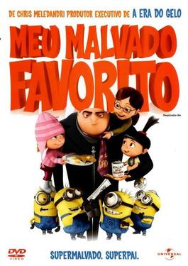
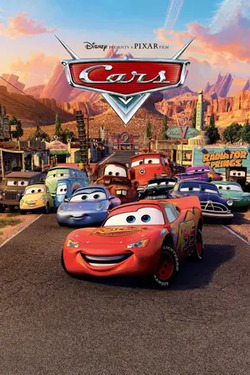
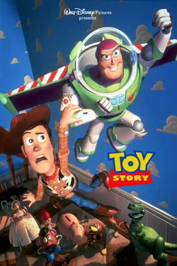
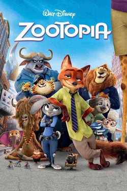
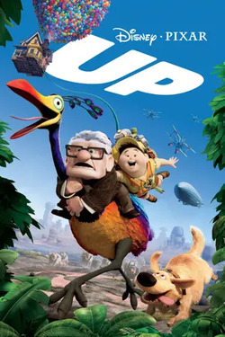
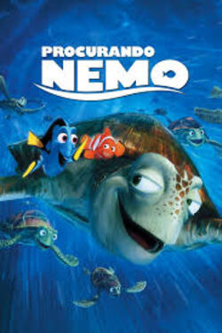
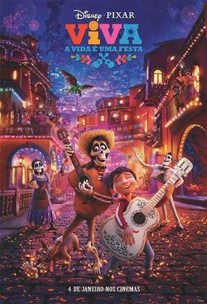
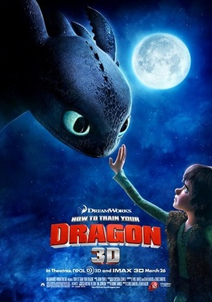

Lista de recomendação
|

Gênero:Animação, Comédia, Aventura Disponível em: Netflix. |
NotasIMDB:7,6 Rotten Tomateos: critíca:80% Público:83% J&J:7,2 |
SinipseGru é um supervilão determinado a realizar o maior roubo da história: ele quer roubar a Lua. Para isso, ele conta com a ajuda de uma legião de Minions, seus assistentes atrapalhados, e um plano genial. No entanto, sua vida dá uma guinada inesperada quando três meninas órfãs, Margo, Edith e Agnes, entram em sua vida. Inicialmente adotadas como parte de seu plano maligno, as crianças começam a mudar o coração de Gru, transformando suas ambições e fazendo-o repensar o que realmente importa. |
|
Review pessoalEsse filme conquistou o público com seu protagonista Gru, um vilão que acaba descobrindo o poder do amor paternal. O humor é leve, cheio de momentos engraçados, especialmente com os Minions, que logo se tornaram um fenômeno por si só. A história é simples, mas tocante, com uma mensagem sobre como as crianças podem mudar nossa visão do mundo. É um filme que diverte e aquece o coração. |
|

Gênero: Animação, Aventura, Comédia Disponível em: Disney+. |
NotasIMDB:7,2 Rotten Tomateos: critíca:75% Público:80% J&J:7,5 |
Sinipse"Carros" é uma animação da Pixar que segue Lightning McQueen, um carro de corrida ambicioso, que acidentalmente fica preso na pequena cidade de Radiator Springs. Enquanto busca voltar para a pista de corrida, McQueen faz novos amigos e aprende lições valiosas sobre amizade, humildade e o verdadeiro significado de sucesso. O filme combina aventura, humor e uma visão cativante sobre o mundo dos carros. |
|
Review pessoalCarros é mais do que uma animação sobre corridas. A jornada do Relâmpago McQueen para entender o valor da amizade e da humildade é cativante, e a ambientação na pequena Radiator Springs traz um charme todo especial. Apesar de ser um filme voltado para o público mais jovem, ele tem aquela sensibilidade típica da Pixar, que toca em temas como envelhecimento, mudanças e a importância de desacelerar na vida. |
|

Gênero: Animação, Aventura, Comédia Disponível em: Disney+. |
NotasIMDB:8,3 Rotten Tomateos: critíca:100% Público:92% J&J:8,0 |
Sinipse"Toy Story" é uma animação da Pixar que segue as aventuras dos brinquedos de um garoto chamado Andy. Quando Andy não está por perto, os brinquedos ganham vida e têm suas próprias histórias e preocupações. O filme foca principalmente em Woody, um cowboy de pelúcia que é o brinquedo favorito de Andy, e Buzz Lightyear, um astronauta que chega para substituir Woody como o brinquedo mais amado. Inicialmente, Woody e Buzz têm um relacionamento conflituoso, mas acabam s e unindo para enfrentar uma série de desafios e garantir que todos os brinquedos permaneçam seguros e felizes. |
|
Review pessoalEsse foi o início de tudo para a Pixar, e Toy Story é um marco não só na animação, mas no cinema em geral. A amizade entre Woody e Buzz é o centro de uma história que fala sobre crescer, mudanças e o valor das amizades. O fato de os brinquedos ganharem vida traz uma nostalgia e, ao mesmo tempo, faz a gente refletir sobre o tempo e o que realmente importa. É um filme que marcou gerações e continua relevante até hoje. |
|

Gênero: Animação, Comédia, Aventura Disponível em: Disney+. |
NotasIMDB:8,0 Rotten Tomateos: critíca:98% Público:92% J&J:8,1 |
Sinipse"Zootopia" é uma animação da Disney que se passa em uma cidade futurística habitada por animais antropomórficos. A história segue Judy Hopps, uma coelha que se torna a primeira policial de sua espécie em Zootopia. Determinada a provar seu valor, ela forma uma parceria improvável com um vigarista, Nick Wilde, para resolver o mistério do desaparecimento de animais. Juntos, eles desvendam uma conspiração que ameaça a paz e a ordem da cidade. |
|
Review pessoalZootopia é uma animação brilhante tanto no visual quanto na mensagem. A história da coelhinha Judy Hopps, que quer ser a primeira policial de Zootopia, é uma alegoria inteligente sobre preconceito e estereótipos. O filme equilibra bem comédia e ação, com personagens super carismáticos como o raposo Nick Wilde. As metáforas sobre diversidade e convivência são sutis, mas poderosas, e o filme consegue ser relevante e divertido ao mesmo tempo. |
|

Gênero: Animação, Aventura, Drama Disponível em: Disney+. |
NotasIMDB:8,3 Rotten Tomateos: critíca:98% Público:90% J&J:8,3 |
Sinipse"Up: Altas Aventuras" é uma animação da Pixar que conta a história de Carl Fredricksen, um idoso vendedor de balões que, após a morte de sua esposa Ellie, decide realizar o sonho que ambos tinham de viajar para as Cataratas do Paraíso, um lugar remoto na América do Sul. Para isso, ele amarra milhares de balões à sua casa e parte em uma jornada incrível. No entanto, Carl acaba levando consigo acidentalmente Russell, um jovem escoteiro determinado a ganhar sua última medalha de mérito por ajudar os idosos. Juntos, eles vivem uma aventura emocionante, cheia de descobertas, desafios e amizades inesperadas, enquanto Carl aprende a abrir seu coração para novas experiências e conexões. |
|
Review pessoalQuem não se emocionou com os primeiros minutos de Up? A Pixar conseguiu contar uma história de vida, amor e perda em poucos minutos e, a partir daí, nos leva numa aventura inesperada. Carl e Russell formam uma dupla improvável, mas é isso que faz o filme tão especial. A história é tocante, mas também cheia de humor e momentos de pura diversão. A ideia de que nunca é tarde demais para viver novas aventuras é inspiradora. |
|

Gênero: Animação, Aventura, Comédia isponível em: DDisney+. |
NotasIMDB:8,2 Rotten Tomateos: critíca:99% Público:86% J&J:8,6 |
Sinipse"Procurando Nemo" é uma animação da Pixar que conta a história de Marlin, um peixe-palhaço que embarca em uma jornada pelo oceano para encontrar seu filho, Nemo, que foi capturado por um mergulhador. Com a ajuda de Dory, uma peixe azul com problemas de memória, Marlin enfrenta diversos desafios e aprende sobre coragem e amizade. |
|
Review pessoalA Pixar mais uma vez acertou em cheio com Procurando Nemo. A busca de Marlin por seu filho Nemo é uma jornada emocionante e divertida, cheia de personagens memoráveis, como a Dory, que rouba a cena com seu jeito atrapalhado. O filme trata de superação de medos, o valor da família e a importância de confiar nos outros. Além disso, a animação do oceano é deslumbrante, fazendo a gente se sentir submerso na aventura. |
|

Gênero: Animação, Música, Drama/p> Disponível em: Disney+. |
NotasIMDB:8,4 Rotten Tomateos: critíca:97% Público:94% J&J:8,8 |
Sinipse"Viva A Vida é uma Festa" é uma animação da Pixar que segue Miguel, um garoto de 12 anos que sonha em se tornar um músico famoso, mas enfrenta a desaprovação de sua família. Ele acaba se aventurando na Terra dos Mortos durante o Dia dos Mortos, onde descobre segredos sobre sua família e a importância da memória e da tradição. |
|
Review pessoalEsse filme é uma verdadeira celebração à vida, à família e às nossas raízes culturais. A forma como a Pixar retrata o Dia dos Mortos é lindíssima, tanto visualmente quanto emocionalmente. As cores vibrantes e a trilha sonora, especialmente a música "Lembre de Mim", adicionam uma camada profunda à história. O enredo aborda temas como a importância da memória e o legado que deixamos para quem amamos, e é impossível não se emocionar com o final. |

Gênero: Animação, Comédia, Aventura Disponível em: Netflix. |
NotasIMDB:7,3 Rotten Tomateos: critíca:89% Público:69% J&J:9,0 |
SinipseShrek 2 segue as aventuras de Shrek e Fiona após o casamento deles. Quando os pais de Fiona, o Rei e a Rainha do reino de "Muito, Muito Distante", convidam o casal para uma visita, Shrek enfrenta novos desafios. A chegada de um "príncipe encantado" e a introdução de novos personagens, como o Puss in Boots (Gato de Botas), adicionam mais comédia e complicações à história. |
|
Review pessoalShrek 2 é uma daquelas sequências que não só mantém o nível do primeiro filme como consegue ser ainda melhor. O humor é rápido, cheio de referências pop, e os personagens são cativantes. O Gato de Botas rouba a cena, e a dinâmica entre Shrek, Fiona e Burro continua hilária. O filme também traz mensagens legais sobre aceitação e o que significa ser feliz com quem você realmente é. É uma das animações que conseguem agradar tanto crianças quanto adultos, com piadas em vários níveis. |

Gênero: Animação, Aventura, Drama Disponível em:Disney+. |
NotasIMDB:8,5 Rotten Tomateos: critíca:92% Público:93% J&J:9,3 |
SinipseSO Rei Leão é um clássico da Disney que conta a história de Simba, um jovem leão que é o herdeiro do trono da Savana Africana. A trama começa com a morte trágica de seu pai, Mufasa, que é assassinado pelo traiçoeiro tio Scar. Após a morte do pai, Simba foge e vive exilado com Timão e Pumba, dois amigos improváveis que o ajudam a se adaptar a uma nova vida. |
|
Review pessoalUm verdadeiro clássico da Disney que não envelhece. O enredo é profundo, com uma mistura de tragédia shakespeariana e uma jornada de autodescoberta. As músicas são icônicas (quem não conhece "Hakuna Matata"?), e a animação, mesmo décadas depois, ainda impressiona. A relação entre Simba e Mufasa é um dos pilares emocionais do filme, e a lição sobre o ciclo da vida ressoa com qualquer pessoa, independente da idade. É um filme que mexe com a gente a cada cena. |
|

Gênero: Animação, Aventura, Ação Disponível em:Netflix. |
NotasIMDB:8,1 Rotten Tomateos: critíca:99% Público:91% J&J:9,5 |
SinipseSoluço é um adolescente nórdico da ilha de Berk, onde lutar contra dragões é um modo de vida. Suas visões progressistas e seu estranho senso de humor fazem dele um desajustado, apesar de seu pai ser o chefe do clã. Jogado na escola de luta contra dragões, ele se esforça para provar que é um verdadeiro Viking, mas quando faz amizade com um dragão ferido que chama de Banguela, ele tem a chance de traçar um novo rumo para o futuro de seu povo. |
|
Review pessoalEsse filme consegue combinar aventura e emoção de uma maneira que te prende do início ao fim. A relação entre o Soluço e o Banguela é o coração da história, e é impossível não se apegar aos dois. A trama explora temas como amizade, aceitação e coragem, enquanto os visuais deslumbrantes fazem a gente querer voar junto com eles. As cenas de voo são realmente mágicas, e a trilha sonora é de arrepiar. A DreamWorks acertou em cheio com essa franquia. |